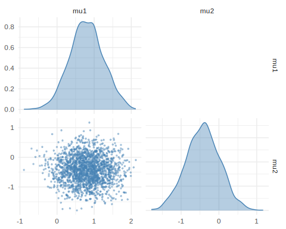
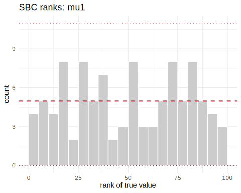

neuralsbi performs Neural Posterior Estimation
(NPE): given a prior and a simulator, it trains a neural
network to approximate the Bayesian posterior p(theta | x)
— no likelihood required. This vignette walks through the core workflow
and shows how to check that the result is trustworthy.
The three ingredients
Every SBI problem needs (1) a prior, (2) a simulator, and (3) an observation. Here is a small linear-Gaussian model whose posterior we happen to know in closed form, so we can check our answer.
library(neuralsbi)
# (1) prior over two parameters
prior <- prior_normal(mean = c(0, 0), sd = 1)
# (2) simulator: an (n x 2) matrix of parameters -> an (n x 2) matrix of data
sigma <- 0.5
simulator <- function(theta) {
theta + matrix(rnorm(length(theta), sd = sigma), nrow = nrow(theta))
}
# (3) the observation we want to explain
x_obs <- c(1.0, -0.5)Train an amortized posterior
npe() draws parameters from the prior, runs the
simulator, and trains a conditional density estimator. For this
linear-Gaussian model, we use the closed-form conditional-Gaussian
estimator, which is exact and requires no neural network
training.
fit <- npe(prior, simulator, n_simulations = 2000,
density_estimator = "linear_gaussian", seed = 1)
fit
#> <nsbi_npe> Neural Posterior Estimation fit
#> density estimator : linear_gaussian
#> parameters (dim) : 2
#> data (dim) : 2
#> simulations : 2000
#> -> build a posterior with posterior(fit, x_obs = ...)The fitted network approximates the posterior for any observation, not just the one at hand — this is what “amortized” means. You train once, then condition on new data without refitting.
post <- posterior(fit, x_obs = x_obs)
draws <- sample(post, 2000)
colMeans(draws) # posterior mean
#> [1] 0.8043282 -0.3931149
map_estimate(post) # MAP point estimate
#> [1] 0.8071431 -0.3851586
pairplot(draws) # joint + marginal view
plot of chunk unnamed-chunk-4
Did it work? Check against the truth
For this model the posterior is a known Gaussian. Let us compare.
d <- 2
Sigma <- solve(diag(d) + diag(d) / sigma^2)
mu <- as.numeric(Sigma %*% (x_obs / sigma^2))
rbind(analytic = mu, estimated = colMeans(draws))
#> [,1] [,2]
#> analytic 0.8000000 -0.4000000
#> estimated 0.8043282 -0.3931149
# classifier two-sample test: ~0.5 => our samples look like analytic samples
z <- matrix(rnorm(2000 * d), ncol = d)
analytic_draws <- sweep(z %*% chol(Sigma), 2, mu, `+`)
c2st(draws, analytic_draws)$accuracy
#> [1] 0.50425Calibration when you don’t know the truth
Usually there is no analytic posterior. Simulation-based calibration (SBC) still tells you whether the posterior is well calibrated: it should produce uniform rank statistics.
res <- sbc(fit, simulator, n_sbc = 100, n_posterior_samples = 100, seed = 2)
expected_coverage(res) # nominal vs empirical credible-interval coverage
#> nominal param1 param2
#> 1 0.05 0.05 0.10
#> 2 0.10 0.11 0.10
#> 3 0.15 0.14 0.19
#> 4 0.20 0.18 0.22
#> 5 0.25 0.21 0.28
#> 6 0.30 0.27 0.31
#> 7 0.35 0.30 0.38
#> 8 0.40 0.33 0.43
#> 9 0.45 0.38 0.50
#> 10 0.50 0.42 0.51
#> 11 0.55 0.49 0.56
#> 12 0.60 0.54 0.61
#> 13 0.65 0.57 0.65
#> 14 0.70 0.63 0.71
#> 15 0.75 0.66 0.74
#> 16 0.80 0.73 0.81
#> 17 0.85 0.83 0.84
#> 18 0.90 0.88 0.94
#> 19 0.95 0.92 0.96
plot_sbc(res) # flat histogram = calibrated
plot of chunk unnamed-chunk-6
Neural estimators with torch
For non-Gaussian posteriors, you need a neural density estimator like
the Mixture Density Network (MDN). This requires
torch.
fit_mdn <- npe(prior, simulator, n_simulations = 2000,
density_estimator = "mdn", max_epochs = 200, seed = 1)
fit_mdn
#> <nsbi_npe> Neural Posterior Estimation fit
#> density estimator : mdn
#> parameters (dim) : 2
#> data (dim) : 2
#> simulations : 2000
#> best val loss : 1.2831
#> -> build a posterior with posterior(fit, x_obs = ...)
# on this Gaussian model the MDN matches the exact linear_gaussian posterior
draws_mdn <- sample(posterior(fit_mdn, x_obs = x_obs), 2000)
rbind(analytic = mu, mdn = colMeans(draws_mdn))
#> [,1] [,2]
#> analytic 0.8000000 -0.4000000
#> mdn 0.8476796 -0.3540663
c2st(draws_mdn, analytic_draws)$accuracy
#> [1] 0.535Non-Gaussian posteriors
The MDN is not limited to Gaussian posteriors: it recovers the
bimodal, crescent-shaped posterior of the classic
two-moons task, and the flow estimators
("maf", "nsf") go further still. That
comparison is the subject of
vignette("density-estimators").
Where to go next
The vignettes build on each other:
-
vignette("density-estimators")— which estimator to use, and when. -
vignette("diagnostics")— calibration and predictive checks for a fitted posterior. -
vignette("sir-epidemic")— the complete Bayesian workflow on an applied epidemic-model calibration.
?npe, ?posterior, and ?sbc
document every argument.